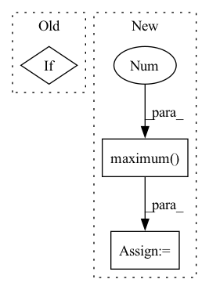

Pattern ID :29221
Before Change
running_mean = self.running_mean.broadcast(x, [0,2,3])
running_var = self.running_var.broadcast(x, [0,2,3])
norm_x = (x-running_mean)/jt.sqrt(running_var+self.eps)
if not self.affine:
return norm_x
w = self.weight.broadcast(x, [0,2,3])
b = self.bias.broadcast(x, [0,2,3])After Change
xmean = xmean.mpi_all_reduce("mean")
x2mean = x2mean.mpi_all_reduce("mean")
xvar = (x2mean-xmean*xmean).maximum(0.0 )
w = self.weight / jt.sqrt(xvar+self.eps)
b = self.bias - xmean * w
norm_x = x * w.broadcast(x, dims) + b.broadcast(x, dims)
self.running_mean.update(self.running_mean +In pattern: SUPERPATTERN
Frequency: 3
Non-data size: 3
Instances Fragment ID: 85967359
Project Name: jittor/jittor
Commit Name: 79579b4a30434d43d79821469eb5501bf5a5063e
Time: 2020-11-25
Author: randonlang@gmail.com
File Name: python/jittor/nn.py
M Class Name: BatchNorm
N Class Name: BatchNorm
M Method Name: execute(2)
N Method Name: execute(2)
M Parent Class: Module
N Parent Class: Module
M File Name: python/jittor/nn.py
N File Name: python/jittor/nn.py
M Start Line: 351
M End Line: 371
N Start Line: 349
N End Line: 371
Before Change
variance = jt.mean(numerator.sqr(),dims=dims,keepdims=1)
denominator = jt.sqrt(variance+self.eps)
norm_x = numerator/denominator
if self.elementwise_affine:
norm_x = norm_x * self.weight+self.bias
return norm_x
After Change
xmean = jt.mean(x, dims=dims)
x2mean = jt.mean(x*x, dims=dims)
xvar = (x2mean-xmean*xmean).maximum(0.0 )
w = self.weight / jt.sqrt(xvar+self.eps)
b = self.bias - xmean * w
return x * w.broadcast(x, dims) + b.broadcast(x, dims)
Fragment ID: 85967358
Project Name: jittor/jittor
Commit Name: 79579b4a30434d43d79821469eb5501bf5a5063e
Time: 2020-11-25
Author: randonlang@gmail.com
File Name: python/jittor/nn.py
M Class Name: LayerNorm
N Class Name: LayerNorm
M Method Name: execute(2)
N Method Name: execute(2)
M Parent Class: Module
N Parent Class: Module
M File Name: python/jittor/nn.py
N File Name: python/jittor/nn.py
M Start Line: 458
M End Line: 465
N Start Line: 410
N End Line: 417
Before Change
smaller floating point dtypes (e.g. np.float32), then the absolute
step size will be calculated from the smallest floating point size.
if rel_step is None:
rel_step = _eps_for_method(x0.dtype, f0.dtype, method)
sign_x0 = (x0 >= 0).astype(float) * 2 - 1
return rel_step * sign_x0 * np.maximum(1.0, np.abs(x0))After Change
// however we don"t want an abs_step of 0, which can happen if
// rel_step is 0, or x0 is 0. Instead, substitute a realistic step
dx = ((x0 + abs_step) - x0)
abs_step = np.where(dx == 0,
rstep * sign_x0 * np.maximum(1.0 , np.abs(x0)) ,
abs_step)
return abs_step Fragment ID: 85967357
Project Name: scipy/scipy
Commit Name: 833b1b2101c701669468a75adab0ebe7067eaeca
Time: 2021-11-09
Author: andyfaff@gmail.com
File Name: scipy/optimize/_numdiff.py
M Class Name: AnonimousClass
N Class Name: AnonimousClass
M Method Name: _compute_absolute_step(4)
N Method Name: _compute_absolute_step(4)
M Parent Class:
N Parent Class:
M File Name: scipy/optimize/_numdiff.py
N File Name: scipy/optimize/_numdiff.py
M Start Line: 169
M End Line: 172
N Start Line: 171
N End Line: 190